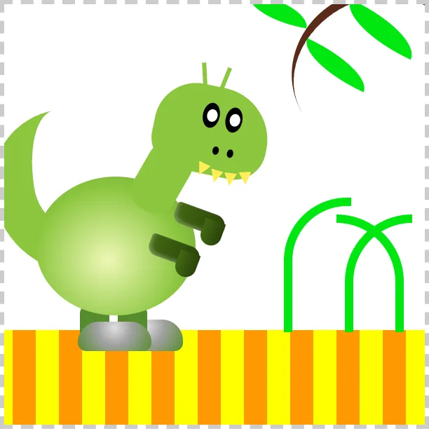
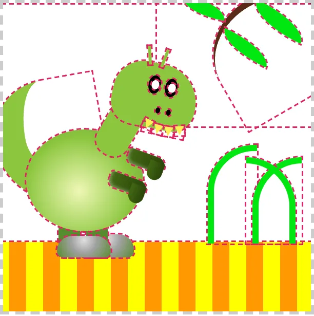
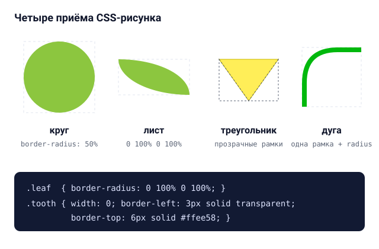
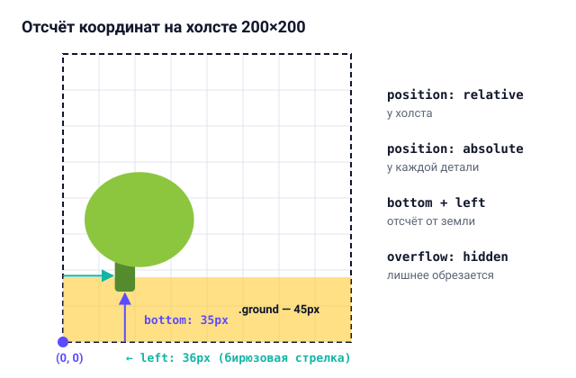

Задание 1. Рисунок средствами CSS (вариант 1)
В первой работе нужно было собрать картинку размером 200x200 пикселей без единого файла изображения или SVG - только с помощью обычных блоков HTML и таблиц стилей CSS. По первому варианту мне достался зеленый динозавр на полосатой земле под веткой с листьями.
Результат работы
Ниже показан сам CSS-рисунок (собран из обычных тегов div и span):
Как собирался этот рисунок


Вся сцена помещена внутрь контейнера .canvas-200 с фиксированной шириной и высотой 200 пикселей.
Чтобы внутренние детали можно было расставлять по точным координатам, самому холсту задано свойство
position: relative, а также overflow: hidden, чтобы края веток и почвы не вылезали
за пунктирную рамку. Нижняя полоса земли сделана одним блоком .ground, которому вместо кучи
отдельных прямоугольников задан повторяющийся линейный градиент repeating-linear-gradient из
желтых и оранжевых полосок шириной по 11 пикселей.
Сам динозавр состоит примерно из двадцати вложенных блоков: отдельно идут хвост, задняя и передняя ноги,
ступни, овальное туловище, передние лапки, шея и голова с мелкими деталями. Здесь я хорошо прочувствовал,
как работает порядок наложения элементов в HTML: если не указывать везде z-index вручную,
браузер рисует выше те блоки, которые идут ниже по коду. Поэтому дальнюю ногу и хвост я разместил в разметке
раньше туловища (чтобы они частично прятались за животом), а ближние лапки и голову - после него.


Когда подгоняешь десятки мелких деталей с поворотом через transform: rotate(), на глаз бывает
трудно понять, где именно находятся настоящие границы блока. Во время верстки мне очень помог простой
прием: временно прописать для всех элементов outline: 1px dashed red (или включить подсветку
сетки в инспекторе браузера). На втором скриншоте как раз видно, из каких прямоугольников на самом деле
сложена картинка.
Чтобы динозавр не выглядел совсем плоской аппликацией, для тела, головы и лап использован радиальный градиент
radial-gradient со смещенным центром свечения. За счет этого середина фигуры получается светло-зеленой,
а к краям цвет плавно уходит в более темный оттенок.
Основные приемы CSS для создания фигур


Несмотря на то что в HTML любой тег изначально представляет собой обычный прямоугольник, из него можно получить почти любую простую геометрическую фигуру с помощью четырех стандартных приемов:
- Круги и эллипсы (глаза, зрачки, ноздри, туловище) получаются за счет скругления
border-radius: 50%. - Листья на ветке сделаны из прямоугольников, у которых сильно скруглены только два противоположных угла:
border-radius: 0 100% 0 100%. - Острые зубы сверстаны классическим трюком с рамками: самому элементу
.toothставятся нулевые ширина и высота, верхняя рамка заливается желтым цветом, а левая и правая делаются прозрачными (transparent). - Стебли травы, усики и ветка - это пустые блоки с прозрачным фоном, у которых включена только одна или две соседние стороны рамки (например, верхняя и левая) вместе со скруглением угла.


Еще одно удобное решение в этой работе - позиционировать части динозавра через bottom и
left, то есть отсчитывать высоту снизу от земли, а не сверху. Так как высота полосатой почвы
равна 45 пикселям, достаточно было поставить ногам координату около bottom: 35px, и персонаж
сразу ровно встал на землю.